HOWTO REPAIR ANY CABLE FROM A FOREARM or HAND - VERSION 2
1 LOWER ARM VERSION 2
Let's have an overview of the mechanical CAD from different view angles.
| Left Forearm V2 | Right Forearm V2 |
|---|---|
| 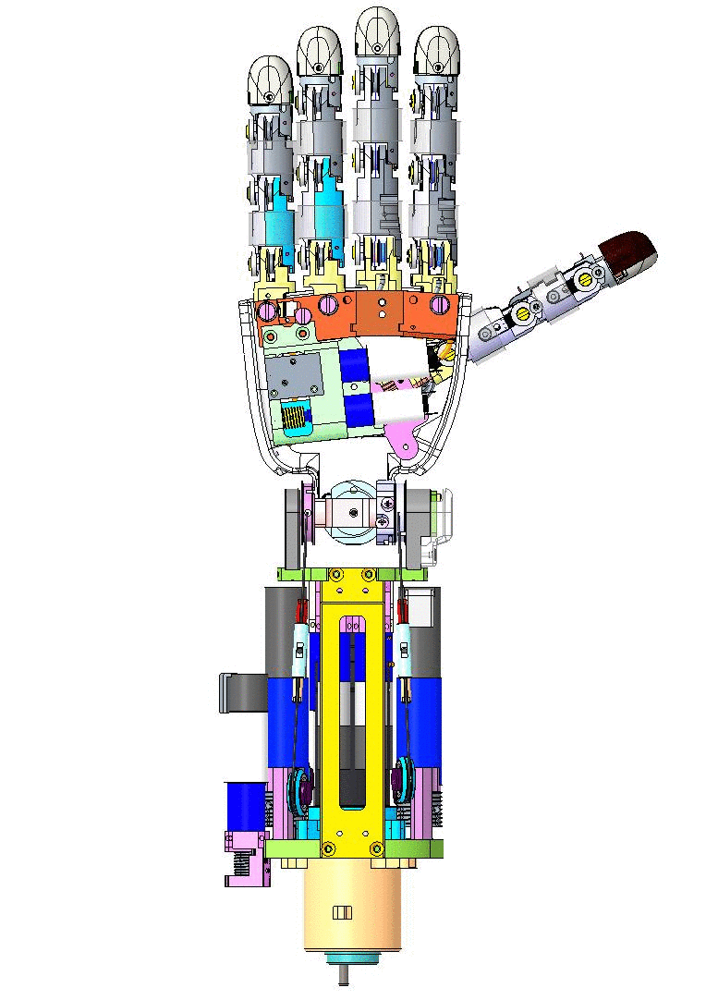 | 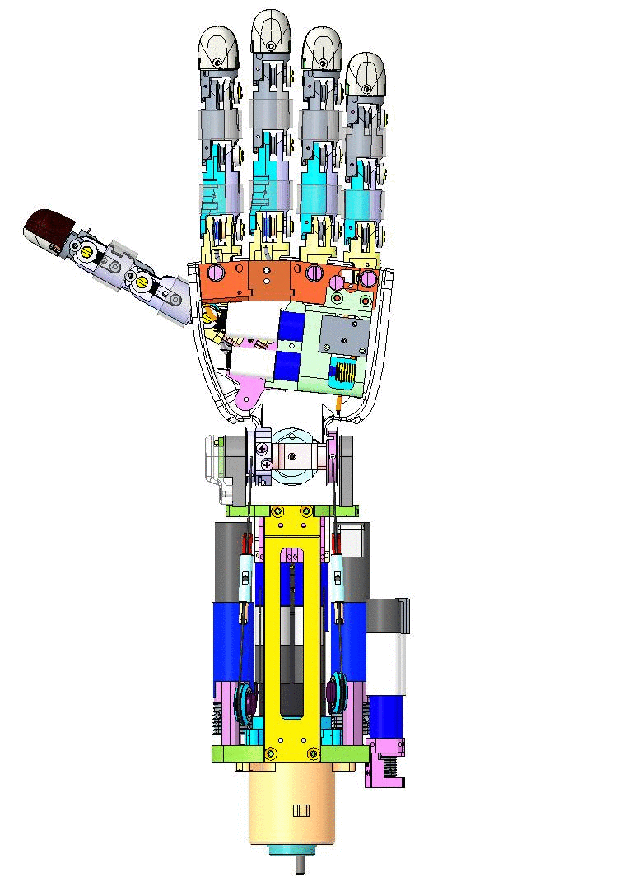 |
1.1 Rules of Thumb for a good start:
1 - Visual inspection (remove the covers - around the forearm and above the hand - and look for broken cables)
2 - Identification (which part needs to be repaired)
3 - Cleaning and Removing the broken cable
4 - Follow the instructions below to repair
1.2 Disconnection
A good question on which people may have when first try to repair the Forearm is:
"Do I need to disconnect the Lower Arm?"
The answer is as follow:
| What is broken? | REMOVING OR NOT |
|---|---|
| distal joint (Thumb, Index, Middle, Ring or Pinkie) | NOT necessary |
| every other joint (all proximal, fingers abduction and Thumb oppose ) | MANDATORY |
Please refer to this following link to get know HOWTO disconnect the Lower Arm V2.
2 Distal Joints
If ever you realize that one of the following cable is broken bear in mind:
There are 2 types of distal Joint on this version of the forearm:
- The simplest ones - which go inside a motor shaft to get anchored - as soon as the motor is spinning the cable rolls around the pulley and close the joint. Those motors are perfectly identical - only the positions differ :
Thumb, Index & Middle distal joints
- The 2 trickiest ones which are actually a double distal joint in one motor.
Ring and Pinkie Fingers
2.1 Location
The first question to answer will be "Where are those cables located?"
Here is the table to locate all the distal joints on a forearm (left in this case)
| LOCATION | JOINT | POSITION |
|---|---|---|
| 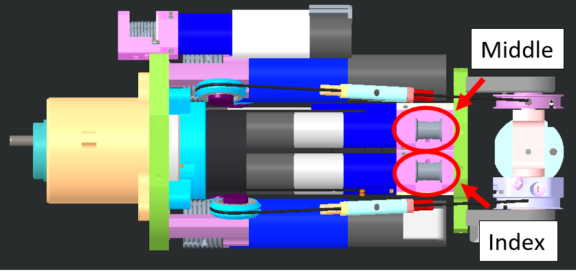 | Index and Middle | they are located ATOP the forearm when it lies palm face DOWN |
| 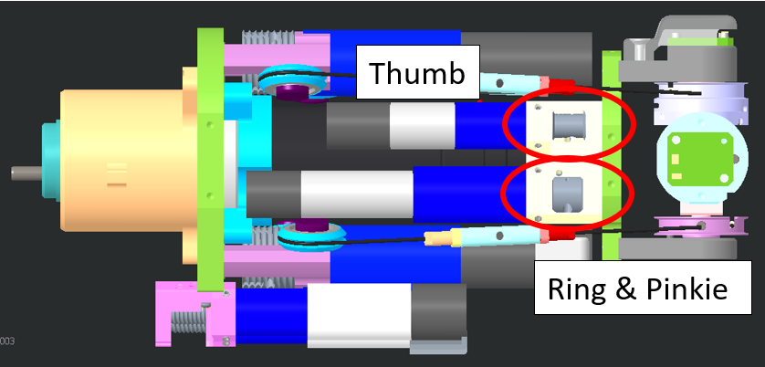 | Thumb distal AND Ring and Pinkie | They are located ATOP when the forearm lies palm face UP |
WATCH OUT
For the Right forearm : the motor positions are "mirrored" respect to the left ones.
Motor Rotations and Fingers Movements
The arrow represents the sense of rotation to close the finger. It is important, after the cabling, to verify that the finger closes when the motor is rotated according to the respective arrow. You can rotate the motor with a flat screwdriver to do so.
| RIGHT FOREARM | LEFT FOREARM |
|---|---|
| 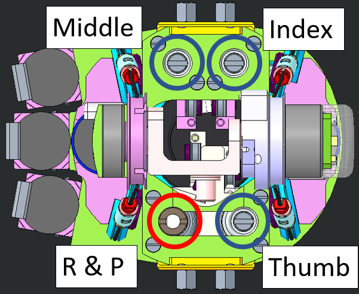 |  |
2.2 WIRING
2.2.1 Preparation
The minimum requirement to start re-cabling distal joints is:
| IITCODE | Alias | Description |
|---|---|---|
| 2391 | U7194561 | Stainless steel micro-cable, cable construction 7x19mm, nom. diameter 0.45mm, outer diameter 0.61mm, Polyamide coated, AISI 316 - CARL STAHL GMBH |
2.2.2 Knot Creation
| STEP BY STEP GUIDE FOR A GOOD KNOT | |
|---|---|
 |
Start by cutting one piece of 40cm from the cable IITCODE 2391. Make a knot at one extremity. |
 |
Use 2 pliers to close it hard. The plier closest to the knot is just opened-free to let the cable to run over it but is here to block the knot, the second one pull the cable to tighten the knot. |
 |
Drop a tear of glue on the knot and dry it. REMOVE the excess with a tissue - double check that the knot is perfectly dry before to proceed. |
 |
Cut the excess of cable. |
| 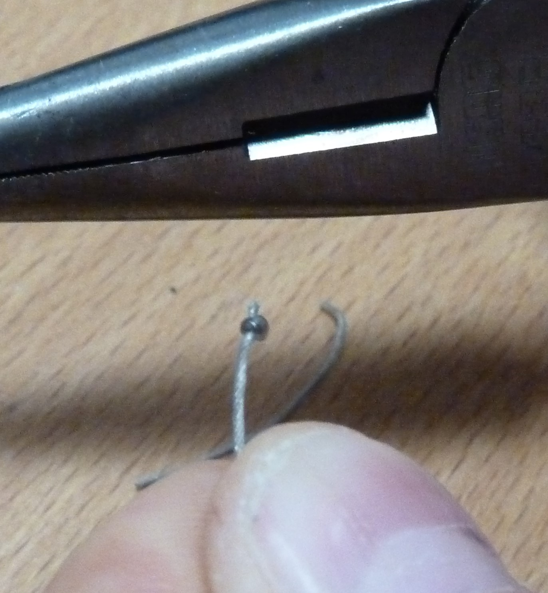 | FINISHED!!! |
2.2.3 Wiring Explanation
THUMB
We will proceed by showing you how to re-cable the distal thumb on the LEFT Forearm - Just be aware that the motors for the RIGHT Forearm are mirrored as per the WATCH OUT above explained.
| pictures | step by step guide |
|---|---|
| 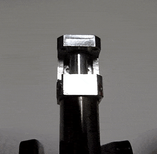 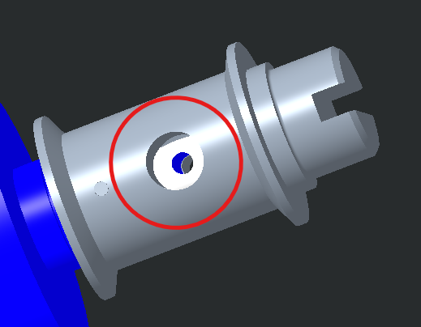 |
1. Insert the knot until it remains inside the socket of the pulley |
| 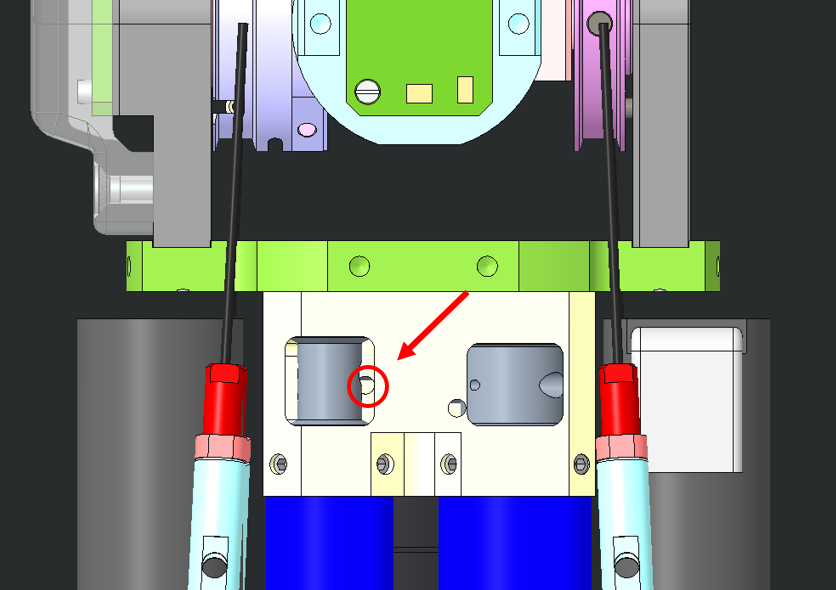 | 2. Just insert the cable inside the hole (red circle) |
| 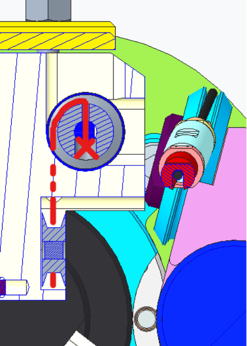 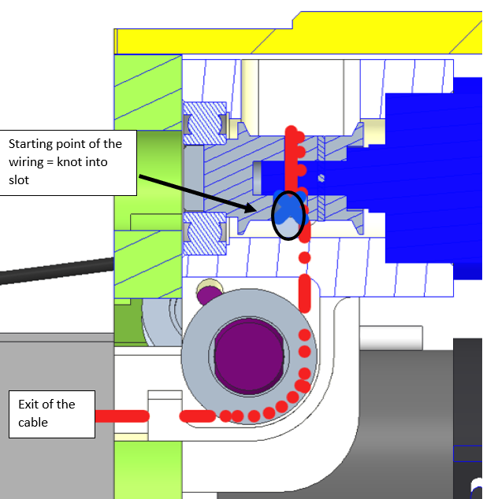 |
3. The cable should get OUT from here - BE PATIENT!!! |
| 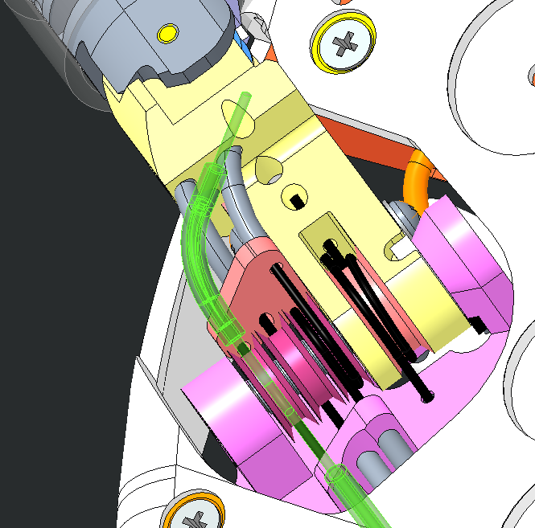 | 4. The cable will then run inside the sheath until it reaches the base of the thumb |
 |
5. Wire this way |
| 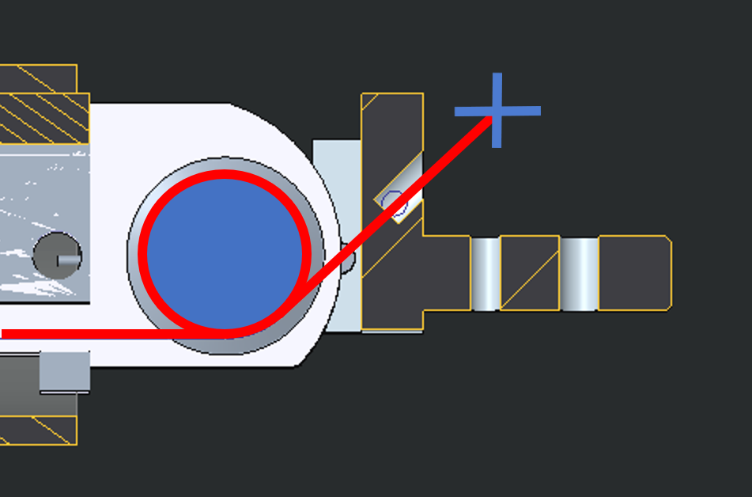 | 6. Make the final knot - you need to make it very close to the finger nail hole (1-2cm away max) - PLEASE DO NOT USE GLUE ON THE FINAL KNOT |
| 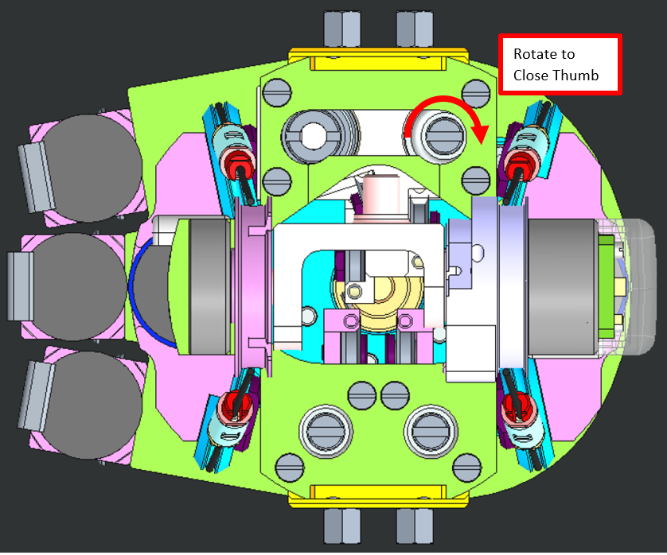 | 7. Just use a screwdriver to make the thumb start closing |
| YOU ARE DONE!!! CONGRATULATIONS!!! | Please close the fingertip and its nail and put back in place the lateral bar |
WATCH OUT
FOR the Right forearm : the motor positions are "mirrored" respect to the Left ones.
INDEX or MIDDLE:
We will proceed by showing you how to re-cable both Index distal and Middle finger from the LEFT Forearm - Just be aware that the motors for the RIGHT Forearm are mirrored as per the WATCH OUT above explained.
| Pictures | step by step guide |
|---|---|
| 1. Insert the knot until it remains inside the socket of the pulley | |
 |
2. Just insert the cable inside the hole (red circle) |
 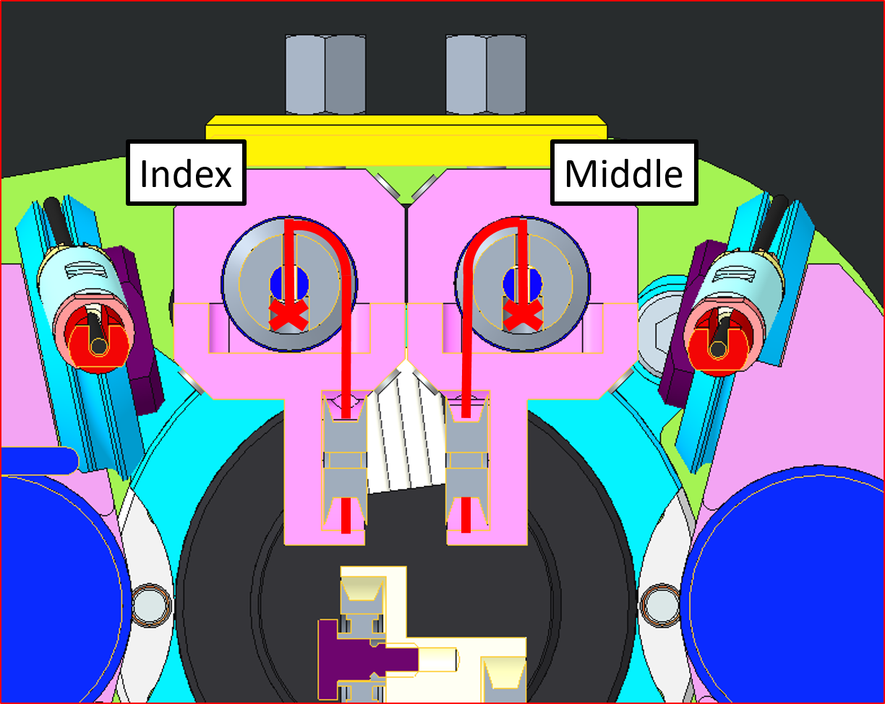 |
3. The cable should get OUT from here - BE PATIENT!!! |
| 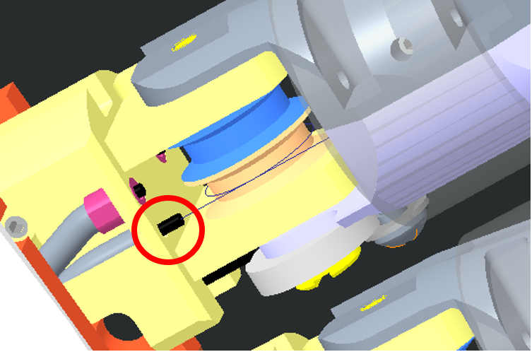 | 4. The cable will then run inside the sheath until it reaches the base of the Middle or Index (view from the palm side) |
| 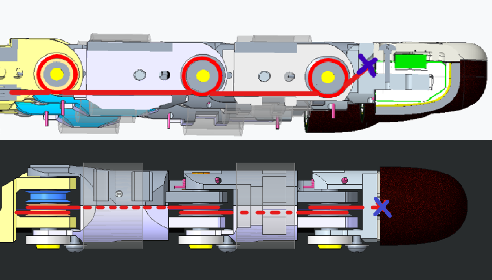 | 5. Wire this way. |
| 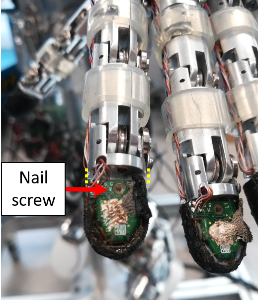 | 6. Please remove the screw holding the nail onto the fingertip - move the fingertip sensor away from the base of the fingertip (1cm away max) |
| 7. Make the final knot - you need to make it very close to the finger nail hole (1-2cm away max) | |
 |
7. Just use a screwdriver to make the thumb start closing. Just recall to do not force with the screwdriver if the movement looks like stuck, do some rotation clock/counter-clock wise in order to unstuck it. |
| YOU ARE DONE!!! CONGRATULATIONS!!! | Please close the fingertip and its nail and put back in place the lateral bar |
WATCH OUT
FOR the Right forearm : the motor positions are "mirrored" respect to the Left ones.
RING AND PINKIE:
Note
Those fingers need to be done together in order to make sure that both cables close simultaneously.
| WHERE | step by step guide |
|---|---|
| 1. Prepare 2 cables of about 40 cm of IITCODE 2391 and make sure you make the knot as taught above. | |
| 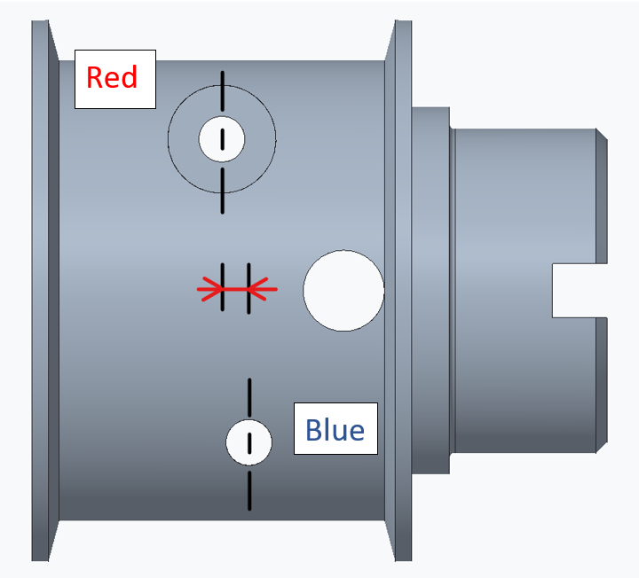 | !!!watch out!!! the 2 holes are a bit off one to another: make sure, with a fat screwdriver, that the pulley is NOT 180 degrees rotated or else the cables could jump one on another during the closing phase. |
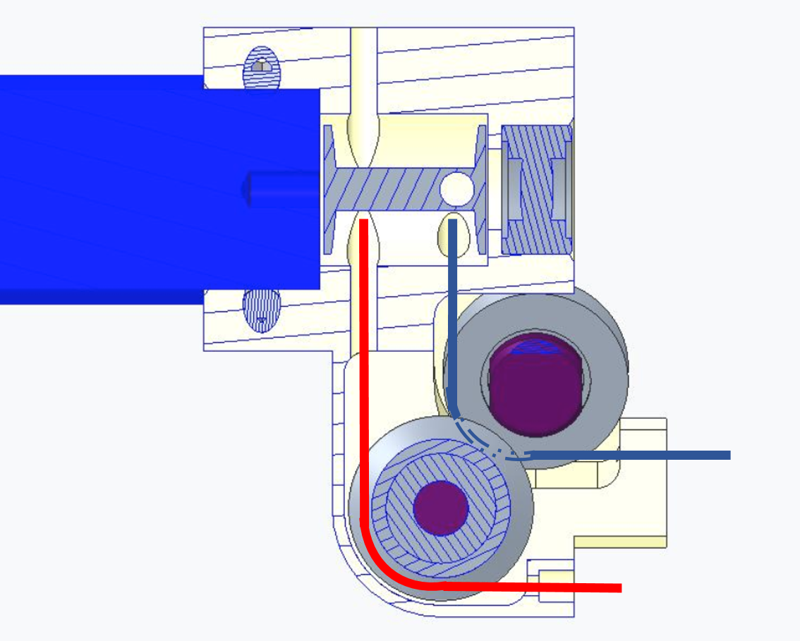  |
2. Insert both cables into their respective holes and start wiring as follow. |
| 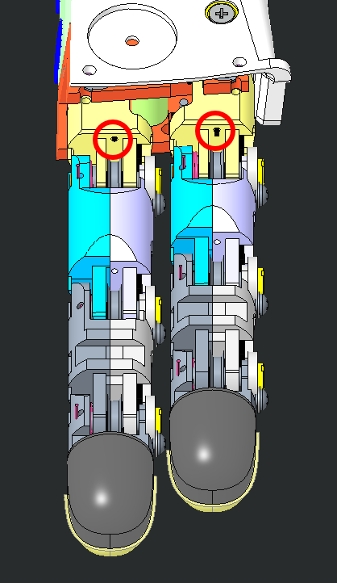 | 3. Push the 2 cables in the sheath until they get out from the 2 holes circled. |
 |
4. Cable routing. To be able to pass the cable at the base of the nail it is important to remove the nail and move forward the fingertip for 1 cm from its base. |
| picture if possible | 5. Please write with a marker at the base of the nails where the knot should be in order to have a perfect simultaneous closing for both fingers. |
| 6. finally make the knot - - PLEASE DO NOT USE GLUE |
Tip
The insertion of the cables into their holes, passing through the pulleys, is tricky. If you are struggling, cut the cable extremity with a 45 deg angle, so it will be easier for it to get in position.
3 Proximal Joints
3.1 location
| LEFT FOREARM | RIGHT FOREARM |
|---|---|
 |
 |
| 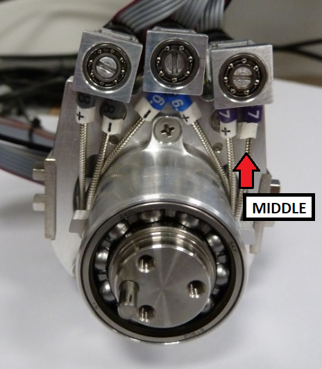 |  |
If you ever realize that one of the following cable is broken bear in mind:
Tip
The start of the wiring for each proximal is identical (wiring around the motor pulley). The index and middle proximal joints are cabled exactly the same way, just the thumb is a bit trickier.
3.2 WIRING
3.2.1 Preparation
The minimum requirement to start re-cabling the proximal joints is:
| IITCODE | Alias | Description |
|---|---|---|
| 1815 | CG077063 | Stainless steel micro-cable, cable construction 7x7mm, nom. diameter 0,63mm, not coated, AISI 316 |
3.2.2 Cabling the Motor Pulley
| LOCATION | step by step guide |
|---|---|
| Take 1 meter of IITCODE 1815. | |
  |
Turn the pulley in order to have the threads already facing (pointing toward) the holes inside the pink frame and the hole inside the pulley itself lying at horizontal. |
 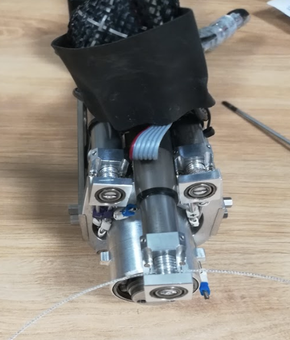  |
Insert the cable inside the pulley and equitably half the cable on both sides of the pulley. In order to differentiate the two cable parts, we will call them red and blue. !!!TIP!!! In order to keep in position the cable split in two halves, pull it like shown in the last pic |
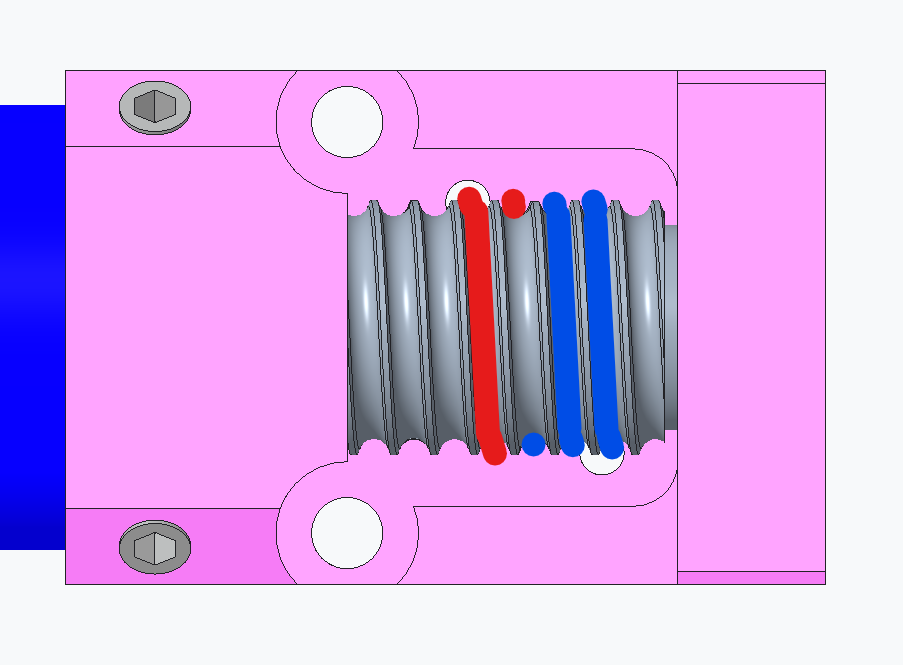   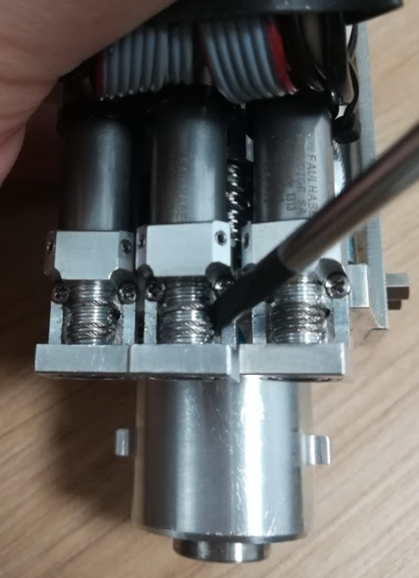 |
Respect the only one rule: 2 full turns around the pulley for the hole close to the ball bearing (blue cable) and 1 full turn for the part that will go into the hole the closest from the motor (red cable). In order to keep the cable in position after the turns, you can push it with a screwdriver like shown in this last picture |
Tip
YOU may need to glue the cable at the tip (2cm long) on both sides. With a plier make 2 times 90 degree angles on the cable at about 3-4mm from one another, in order to create a hook. Extract the cable once it passes between the thread and the neck of the frame. 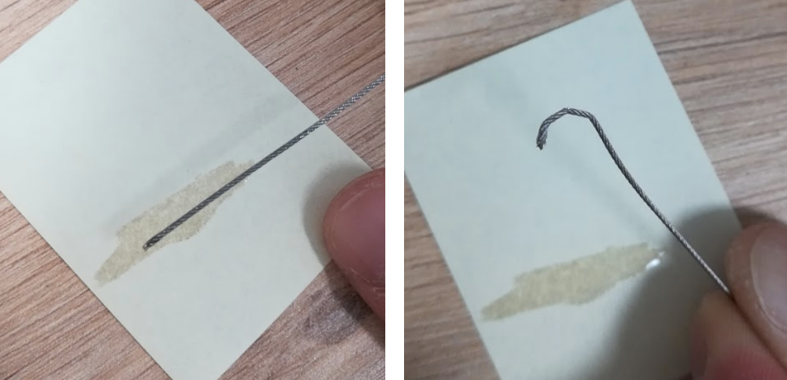
Tip
When inserting the cable in the pulley, make sure that the pulley holes are in phase with the frame holes. In other words, the pulley threads need to be aligned with the 2 holes in the frame.
| LOCATION | step by step guide |
|---|---|
| !!!!WARNING!!! the cabling for the thumb passes first by a pair of pulleys before returning to a perfectly identical cabling as Index and Middle. | |
| 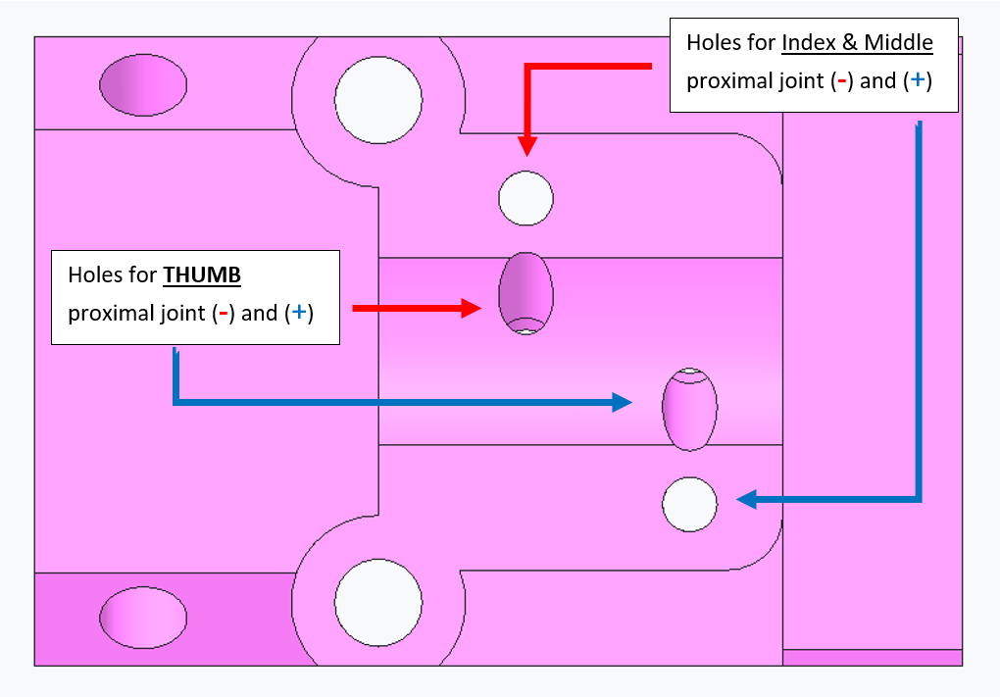 | After wrapping the cable on the pulley, insert the 2 cable extremities inside the frame holes. For the thumb, the frame holes are designed inclined by 45 deg. |
| 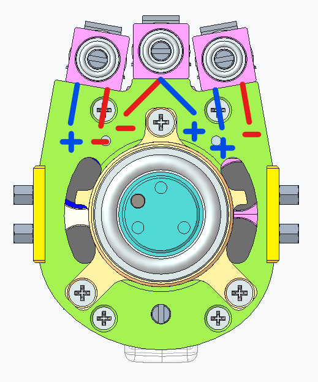 | Push the 2 sides of the cable inside the sheath (+) and (-) for each finger. |
| The 2 sides of the cables should get out: | |
  |
For the THUMB only: the cabling for the thumb passes first by a pair of pulleys before returning to a perfectly identical cabling as Index and Middle, as shown below. |
  |
For all the proximal joints the final cabling starts at the base of their respective finger. |
 |
Cable as follow and block each side of the cable with the nut screw M1.6x3 |
 |
Tense each side of the cable by releasing the nut screw and pinch and rotate. Close the nut screw. |
| Make a knot at the base of the cable exit, a little further away from it (±5 mm) AND keep in mind that the knot will have to remain in the slot. | |
| FINISHED!!! |
Danger
PLEASE DO NOT USE GLUE ON THE FINAL KNOT